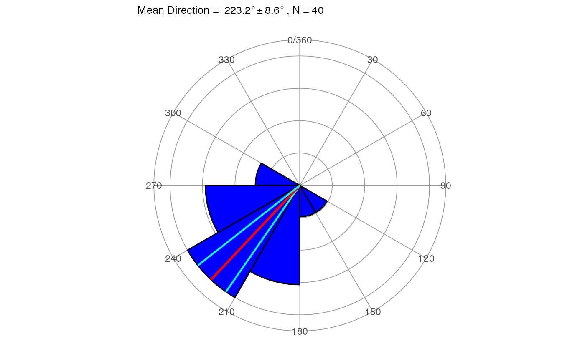
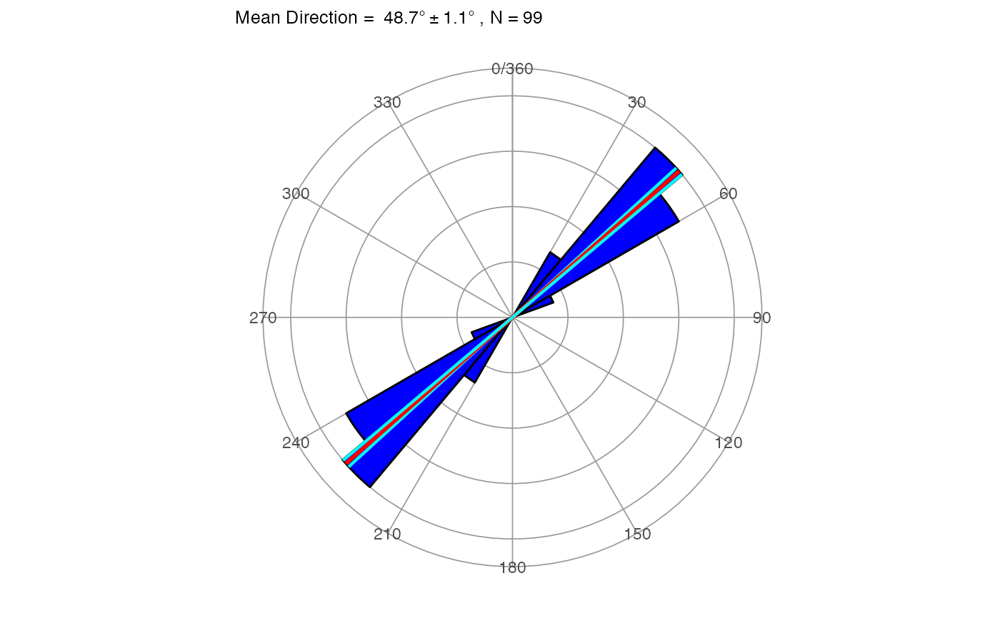

Plots a rose diagram for angular (dip direction or strike) data.
rose_diag_2D(x, width = 30, dir = 1, conf.level = 0.95)
| x | A vector of angular measurements in degrees |
|---|---|
| width | Petal width |
| dir | A logical indicating if the data are directional (1) or non-directional (0) |
| conf.level | Confidence level to use for the cone of confidence (Default is 0.95) |
A ggplot obejct
Directional data refers to dipping planes or lines, data expressed as dip direction (trend). Non-directional data refers to strike or lineations expressed as azimuths that can take two angles (i.e. 45 or 225). The mean direction and cone of confidence are displayed as red and cyan lines respectively.
x = c(255, 239, 222, 231, 199, 271, 222, 274, 228, 246, 177, 199, 257, 201, 237, 209, 216, 180, 182, 250, 219, 196, 197, 246, 218, 235, 232, 243, 232, 180, 231, 254, 242, 149, 212, 210, 230, 205, 220, 268) rose_diag_2D(x, width = 30, dir = 1)# non-directional data example rose_diag_2D(carolina, width = 10, dir = 0)